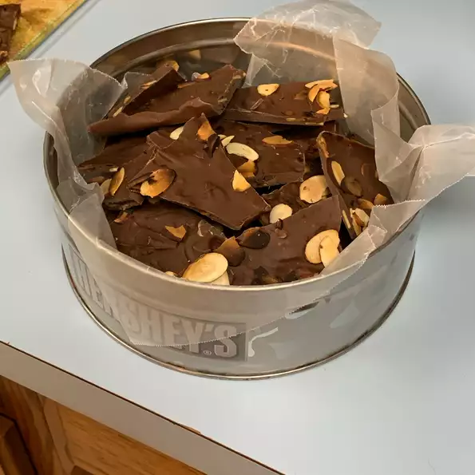

Chocolate Almond Bark

Chocolate lovers and sweet tooths alike
Chocolate is a food made from cacao beans
It can be in a solid form like a candy bar
Ingredients
- ½ cup chopped almonds
- 2 cups milk chocolate chips
- 1tablespoon shortening
Steps
- Line a 9x13 inch baking pan with parchment paper
- In a metal bowl over a pan of simmering water